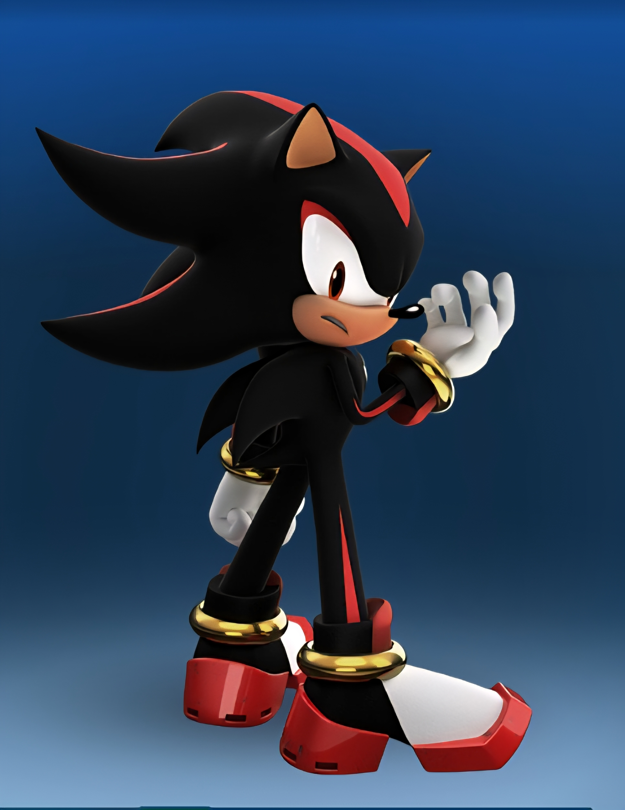

|

|
Shadow The Hedgehog
Siendo la forma de vida definitiva, Shadow The Hedgehog es un erizo que fue creado por el profesor Gerald Robotnik, con adn de los Black Arms, Shadow lucja por el bien para cumplir con la promesa de María, la persona mas cercana que tenía.
Habilidades
Gracias a sus Aero-Shoes Shadow puede llegar a velocidades estando ala par de Sonic, Habilidades derivadas al Chaos Control, Chaos Spear, Teletransportación, Adaptabilidad..
Apariciones
Protagonizando dos juegos, Apariciones en Comics(Archie, IDW), Sonic 3 La pelicula, Sonic Boom, Sonic Prime.
|
Apariciones Importantes
Sonic Adventure 2 (Primera aparición), Sonic Heroes (Segunda aparición), Shadow The Hedgehog The Videogame y Sonic X Shadow Generations (Juegos protagonicos)
|